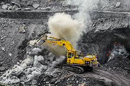

The gross domestic product of Jharkhand is estimated at ₹3.83 lakh crore (US$48 billion) in 2020–21. The per capita GDP of Jharkhand in 2018-19 was ₹82,430 (US$1,000).

Jharkhand has several towns and innumerable villages with civic amenities. Urbanization ratio is 24.1%.[89] Jharkhand also has immense mineral resources: minerals ranging from (ranking in the country within bracket) from iron ore (4th), coal (3rd), copper ore (1st), mica (1st), bauxite (3rd), manganese, limestone, china clay, fire clay, graphite (8th), kainite (1st), chromite (2nd), asbestos (1st), thorium (3rd), sillimanite, uranium (Jaduguda mines, Narwa Pahar) (1st) and even gold (Rakha Mines) (6th) and silver and several other minerals. Large deposits of coal and iron ore support concentration of industry, in centres like Jamshedpur, Dhanbad, Bokaro and Ranchi. Tata Steel, a NSE NIFTY 500 conglomerate has its corporate office and main plant in Tatanagar, Jharkhand.[90] It reported a gross income of ₹. 204,910 million for 2005. NTPC will start coal production from its captive mine in state in 2011–12, for which the company will be investing about Rs 18 billion.
Agriculture is another sector in the economy of Jharkhand which helps the economy to grow. In Jharkhand, farmers produce several crops such as rice, wheat, maize, pulses, potatoes, and vegetables such as tomato, carrots, cabbage, brinjal, pumpkin, and papaya. The other Industries are cottage industry and IT industry.
Jharkhand Economy has grown slowly over the years but the recent efforts taken by the state government are bound to ensure results and rise the economy of the state.